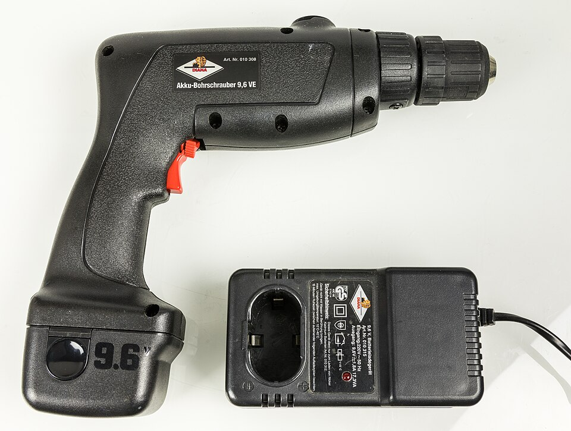
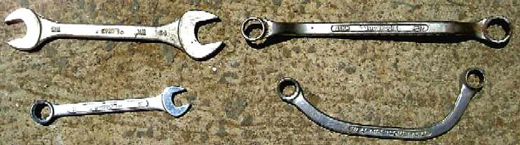

Start in BMS: tools, site work and commissioning
Learn to follow a drawing to a real device, prove what it does and leave a test record. That is a useful first project for a junior building controls job and gives you evidence for adjacent field-service roles.
Watch a BMS technician on a customer site with Grosvenor Engineering Group, an Australian building-services employer.
Which jobs to look for
The SEEK research in this course found 51 BMS and controls ads with a median of 19 applicants, compared with 38 across all 2,764 ads captured on 1–2 November 2026. Drawings appeared in 16 of the 51 ads, IP networking in 12, BACnet and Modbus in 11 each, and Niagara or Tridium in 10. The group includes experienced roles. Electrical licences were mentioned in 20% of the BMS ads. Read each employer’s mandatory requirements before judging fit.
| Look for | What the work can involve | What to check in the ad |
|---|---|---|
| Junior controls technician, BMS trainee, commissioning assistant | Work with a senior technician to trace devices, check points, record results and help with fault-finding. | Check whether training starts from electronics and networking or expects an existing HVAC or electrical trade. |
| BMS installer, electrical apprentice with a controls team | Read layouts, mount devices, run approved cable routes, label and terminate under the applicable supervision. Expect regular construction-site work. | Check the apprenticeship year, construction induction, work rights and driving requirements, and who does the licensed work. |
| Junior BMS integration or graphics role, graduate project or service engineer | Set up controllers and networks, map points, build graphics and trends, and support testing on site. | Look for the qualification level, platform and amount of site work the employer expects. |
Read the employers’ own role descriptions. Alerton Australia describes graduate service and project roles and an electrical apprenticeship. Integrata lists examples of licensed and non-licensed installation roles with experience expectations. Johnson Controls’ Sydney trainee example targets people already qualified in HVAC. Alerton Australia careers · Integrata careers · Johnson Controls trainee example.
Keep adjacent searches open. Electronic security and data cabling share drawings, IP networking and site practice, with their own registration and licensing requirements. PLC and instrumentation share the sensor and commissioning work. Electronics field service and bench repair draw more directly on schematics, meter work and soldering.
What a technician carries and why
A construction installer may spend much of the day mounting, labelling and terminating. A service or commissioning tech may spend more of it at a laptop, multimeter and plant room. Learn to recognise the tools for both and ask the employer which they supply.




| Tool | A BMS task | Practise it |
|---|---|---|
| Tape, marker, level, drill-driver and matching bit | Mark hole centres from a sensor or bracket template and mount it on the approved substrate. A drill bit cuts a hole. A driver bit turns a screw. | Clamp a scrap timber backboard at the bench, mark and drill the pilot holes with the correct bit, and screw a small bracket onto the board. Wear eye protection and follow the tool instructions. |
| Combination spanners, socket or hex key | Secure a bracket or a damper actuator’s shaft clamp. Use the fastener size and torque specified for that model. | Fit the same bracket with a bolt, washer and nut. Use the correctly sized spanner to hold the nut as you tighten the bolt. |
| Wire stripper, ferrule crimper, terminal screwdriver and label printer | Prepare and label the ends of stranded control wires, then terminate them according to the terminal specification. | Make two labelled leads on your unpowered panel. Inspect the ferrule and check retention before connecting power. P05 wiring · P23 panel build. |
| Multimeter, reference thermometer and manometer | Check a control supply or signal, compare a temperature reading with a reference or verify differential pressure. | Prove continuity on an unpowered training lead and compare the voltage at both ends of an isolated ELV supply circuit. P03 multimeter · C03 sensors. |
| Laptop, Ethernet patch lead and approved RS-485 adapter | Connect to the authorised service network, read a point, confirm its units and save a trend. | Find a simulated device on your own training network, then read a value and compare it with your test record. P19 networking · C02 protocol lab. |
| Platform ladder or other site-approved access equipment | Reach a ceiling sensor or actuator when access at height is required. The supervisor’s risk assessment determines the equipment. | At ground level, identify the platform, handrail, locks, feet and rating label on equipment supplied by your trainer. Platform ladder photos · SafeWork NSW ladder video. |
Before opening a ceiling, drilling a wall or working on plant, get the site’s clearance for access, hidden services, asbestos risks and isolation. Keep the practice work on a loose backboard at ground level with an isolated extra-low-voltage supply. Check the role’s state and site requirements for construction induction and the limits on electrical and customer cabling work. C13 first-day site guide · SafeWork NSW White Card guidance · ACMA cabling rules.
Watch the work before you practise it
- Service and operation. In the Grosvenor field video above, look for the places the technician works and the equipment they use. Compare the role with the people who operate the building day to day. NWTC building energy controls operator · Setpoint’s BMS engineers on their work.
- Plant room. See a real AHU and identify the inlet, filter and fan. Use the labelled photo in C03 to orient yourself first. CCPIA air handling unit walkthrough · C03 AHU photo.
- Installation. Watch the actuator’s mechanical setup and the ferrule crimp. They are two small jobs you should be able to explain aloud. Belimo damper actuator demonstration · KNIPEX ferrule crimper demonstration.
- Commissioning. Follow a controls manufacturer’s demonstration of testing BACnet/IP and MS/TP before the equipment goes on site. Note what gets checked before the point value is trusted. Horner Automation BACnet commissioning demonstration.
What to learn first
Read a drawing and prove a wire. Trace a device tag to its terminal number. Make a labelled lead and measure or test it on your trainer. Start with P22 drawings, P03 multimeter and P23 panel craft.
Follow an AHU from sensor to fan. Identify the air path, temperature sensor, damper, fan command and separate fan proof. Draw an example of each physical input and output type. Use C01 BMS points and C03 HVAC.
Find the device and read one point. Set up two hosts on an isolated network, explain their subnet, then discover a simulated BACnet point and read one Modbus register. Record the raw value, units and scaling. Learn to describe where Niagara would sit in that workflow. Use P19 networking, P14 serial buses and C02 BACnet and Modbus.
Commission a sequence and show your work. In P29, confirm that the command appears during a normal run, then hold fan proof open and show the command dropping and an alarm appearing. Save a labelled photo of your trainer, a points list, expected versus actual results, and a normal and failed trend.
Bring that one-page case and your trends to a junior interview. Explain which training switch simulates the feedback, how you knew the fault belonged to the proof path, and which checks you would request a supervisor to perform on real plant.